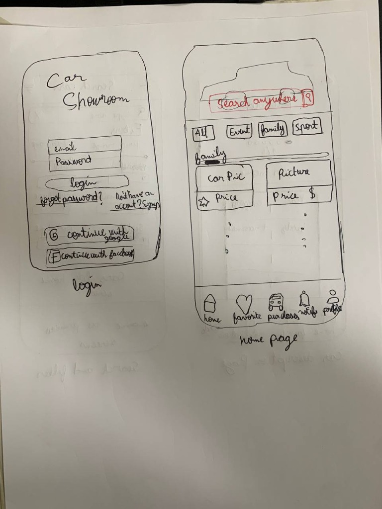
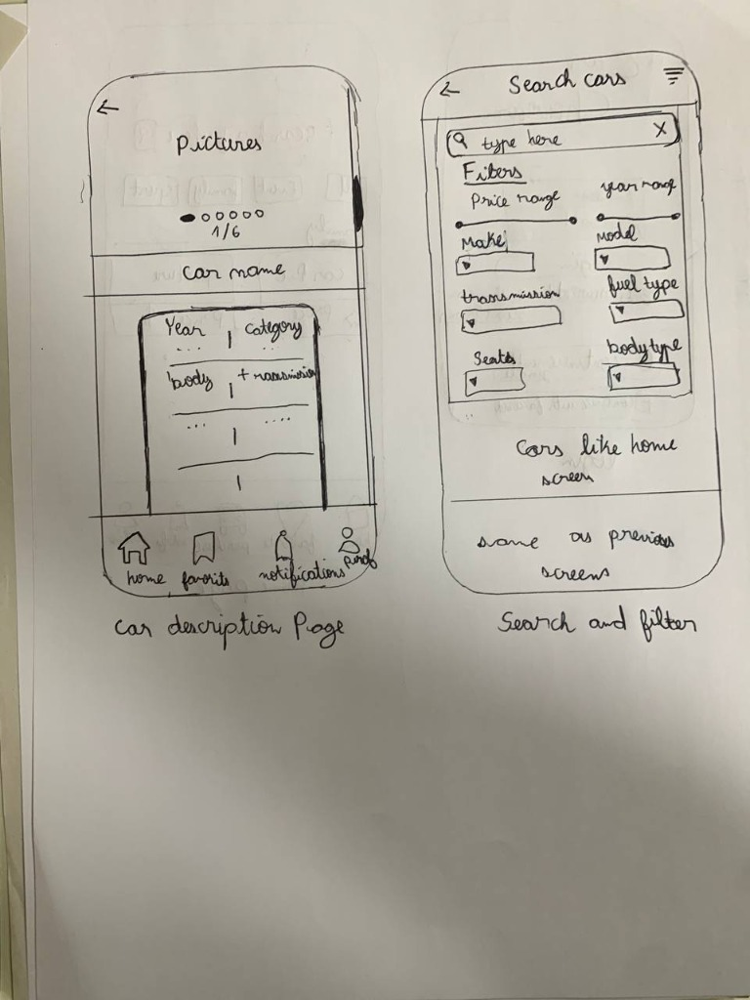
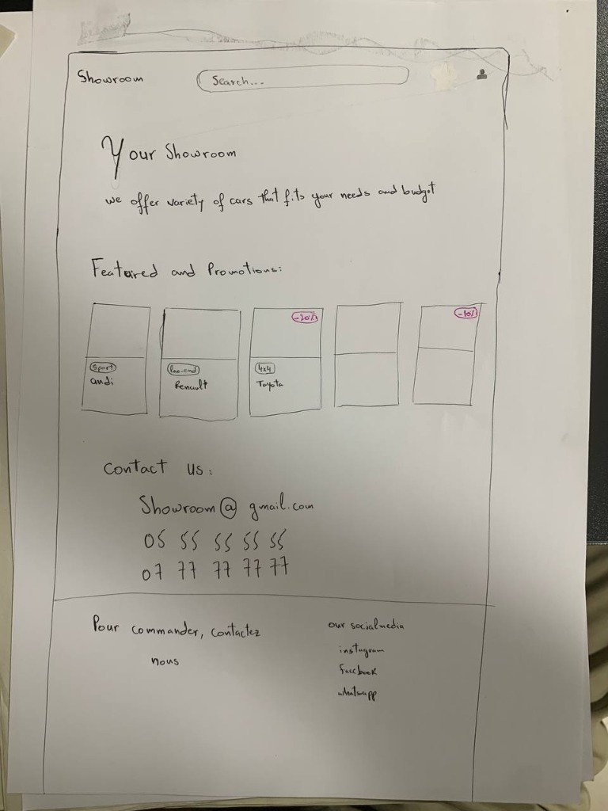
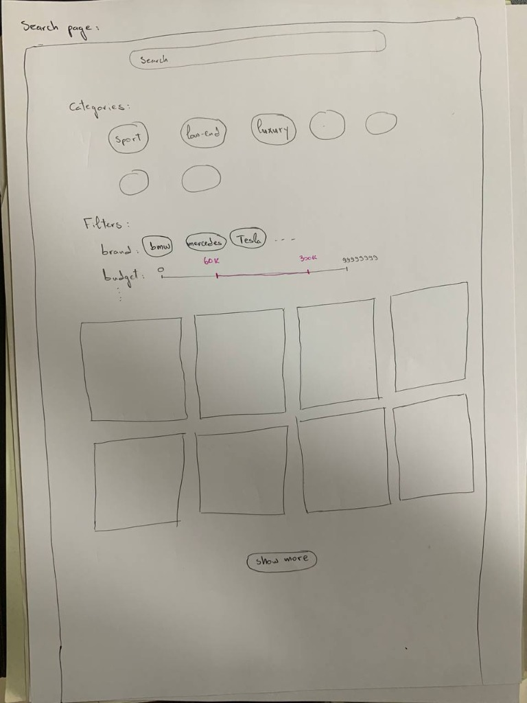
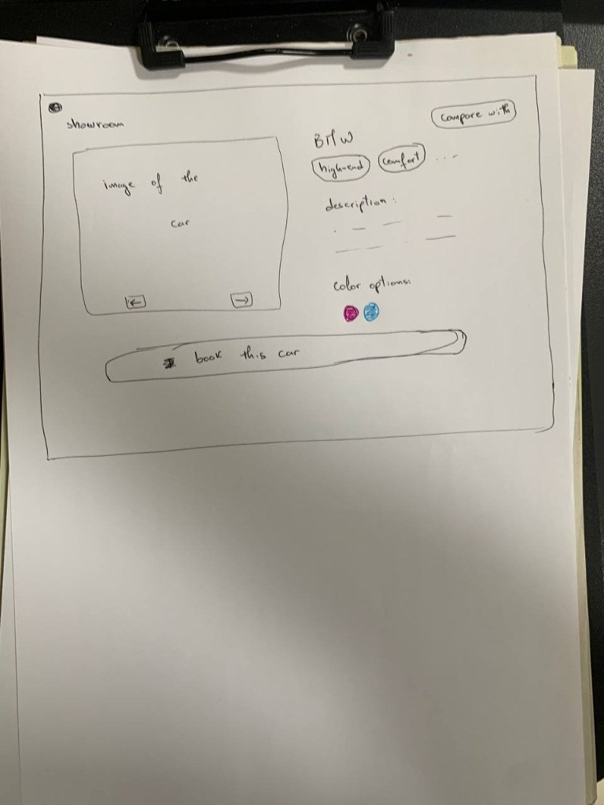
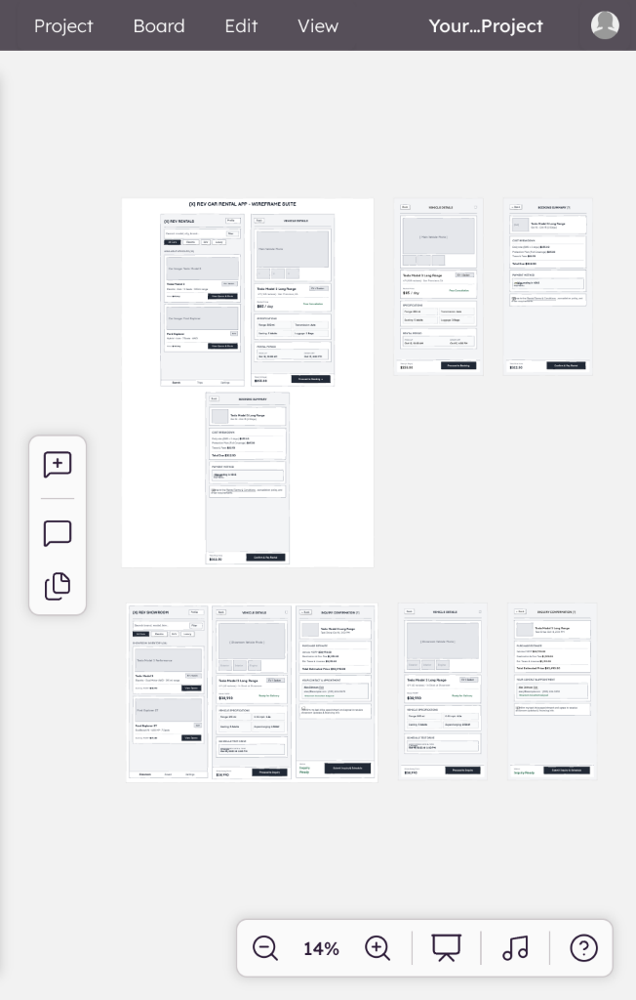
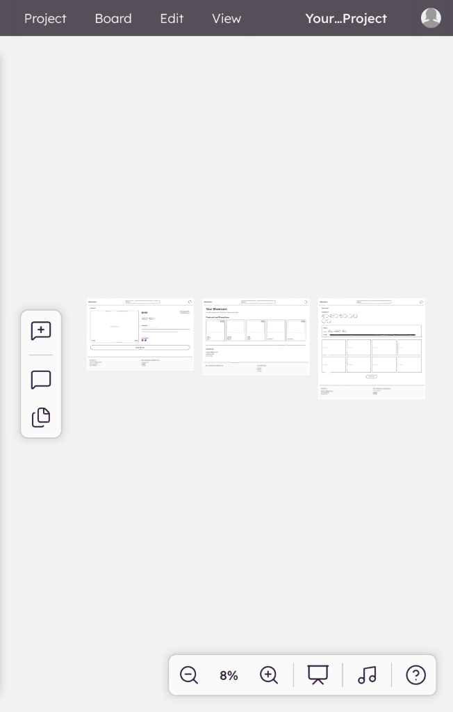

| Link to the Balsamiq project (website) | https://balsamiq.cloud/swyxdl8/pwt7aym |
| Link to the Balsamiq project (mobile) | https://balsamiq.cloud/sd6a7jd/pg04mk1 |
| Paper sketches: how many, who drew them | 5 sheets (7 screens total). Belhimer Mohamed Ayoub (Mobile Login & Home), Bouyahia Moukhlis Yacine (Mobile Search/Filter & Car Details), and Kharroubi nasrellah (Web Home, Search Catalog & Car Details/Compare). |
| Fidelity you chose, and why | Low to Medium fidelity. Low-fidelity paper sketches for rapid concept exploration and frictionless iteration; medium-fidelity Balsamiq wireframes to test layout structure, screen flow, and navigation before committing to high-fidelity graphics. |
| # | Screen name | What the user can do on it | Goes to which screen |
|---|---|---|---|
| 1 | Mobile Login Screen | Enter email/password, use Google or Facebook social login, access password recovery or sign up. | Mobile Home Page |
| 2 | Mobile Home Page | Search anywhere, filter by quick category tabs (All, Event, Family, Sport), view car cards with prices, tap favorite star. | Car Description Page, Search and Filter, Favorites |
| 3 | Mobile Search & Filter | Type query, set price and year range sliders, filter by make, model, transmission, fuel, seats, body type. | Car Description Page, Mobile Home Page |
| 4 | Mobile Car Description | Swipe vehicle photo gallery (1/6), inspect specification grid (year, body, transmission), initiate inquiry/booking. | Booking / Inquiry Summary, Home Page |
| 5 | Web Homepage (Showroom) | Search inventory, view featured promotions & discounts (-20%, -10%), view showroom contacts and social media. | Web Search Page, Car Details Page |
| 6 | Web Car Details & Compare | View large photo carousel with arrows, select color options, click "Compare with" for side-by-side specs, click "Book this car". | Booking Modal, Vehicle Comparison Screen |
Paste a screenshot of your wireframes here (or print the Balsamiq export and staple it to this sheet).







| Element | On the website | On the mobile app, and why it changes |
|---|---|---|
| Navigation | Top horizontal header bar with persistent search input, direct links, and profile icon. | Bottom navigation bar (Home, Favorites, Purchases, Notifications, Profile) for natural one-handed thumb reachability on handheld screens. |
| Search and filters | Top search bar with horizontal category tags and wide multi-slider filter controls directly on the page. | Dedicated search screen with vertical dropdown pickers and compact sliders to prevent cluttering small vertical viewports. |
| Car comparison | Side-by-side multi-column comparison table accessed via the top-right "Compare with" button. | Stacked specification cards or swipeable comparisons; multi-column tables do not fit within narrow portrait mobile widths. |
| Main action (test drive, contact…) | Prominent "Book this car" button and full contact footer (phone numbers, showroom email, social channels). | Sticky bottom CTA button with direct tap-to-call dialer and in-app messaging to instantly reach sales reps. |
| Media & Photo Showcase | Large photo viewer with clickable left/right arrow buttons alongside car descriptions. | Full-width swipeable image carousel with pagination indicator dots (1/6) optimized for intuitive touch swiping. |
Write your menu: 4 to 7 top-level items, at most 3 levels, in the users' words.
| Persona | Their main goal | Which screen answers it | In how many taps or clicks |
|---|---|---|---|
| The Road Trip Enthusiast | Find a reliable, spacious 4x4 or family car with high fuel efficiency and luggage space. | Search & Filter screen (filter by category: 4x4 / Family) → Car Description. | 2 taps/clicks (Category chip → Car card) |
| The Weekend Racer (Tifosi) | Inspect high-performance sports cars, engine specs, horsepower, and track capabilities. | "Sport" category tab on Home/Search → Car Details & Compare screen. | 2 taps/clicks (Tap "Sport" → Select vehicle) |
| The Student on a Budget | Find an affordable, fuel-efficient daily driver within a strict low budget limit. | Search Filters (set budget slider / "Low-end" tab) → Promotions (-20%). | 2 taps/clicks (Set budget → View car) |
| Negative persona (Samir) | what we deliberately do NOT offer: unauthorized bulk image scraping and unregistered broker bookings. | Car Description (watermarked photos) & Booking form (mandatory verified ID pre-qualification). | 0 taps (Blocked by verification gate) |
| We tested the prototype of group | Smail Imed eddine |
| The group that tested ours | Smail Imed eddine |
| Persona we played | The Student on a Budget (Nassim) |
| Task we tried to do as this persona | Filter cars strictly under a 100k budget, sort by lowest price, and locate financing / student discount options. |
| # | What happened (facts) | Why it is a problem for the persona | Serious? | What we suggest |
|---|---|---|---|---|
| 1 | No min/max price slider labels; only a generic search input without an explicit price cap filter. | The budget student cannot set a strict price ceiling and gets expensive luxury cars in the initial view. | High | Add dual-handle budget slider with clear numerical values and quick chips (< 80k, < 150k). |
| 2 | Estimated monthly installment / financing details were buried in small footer text. | Student needs to check monthly affordability before clicking to book a visit. | Medium | Display estimated monthly cost directly below total price on each vehicle card. |
| 3 | Car detail page lacked fuel consumption (L/100km) in the quick overview specs. | Fuel running cost is a primary financial constraint for a student commuter. | Medium | Include average fuel consumption and fuel type prominently in the spec table. |
| 4 | The "Book visit" button did not state whether the consultation is free. | Students hesitate to click fearing hidden fees or upfront deposit obligations. | Low | Add reassurance microcopy: "100% Free visit, no deposit required". |
| # | Their remark | We keep / we change | The change we make, and on which screen |
|---|---|---|---|
| 1 | "On mobile, the filter dropdown list is long and requires excessive vertical scrolling." | We change | Group filters into collapsible accordions with a sticky "Apply Filters" button on Mobile Search & Filter screen. |
| 2 | "The 'Compare with' button on web is very intuitive for comparing sports car specs side by side." | We keep | Keep the prominent top-right Compare CTA on Web Car Details and highlight horsepower/speed differences. |
| 3 | "On mobile home page, car cards in the family section lack quick spec badges (transmission, fuel)." | We change | Add small icon badges (e.g. 'Auto', 'Diesel') directly on Mobile Home car cards next to price. |
| 4 | "Promotional discount badges (-20%, -10%) on Web Home catch attention quickly and clearly." | We keep | Maintain bright promotional discount tags on both Web Home and Mobile Home featured car cards. |